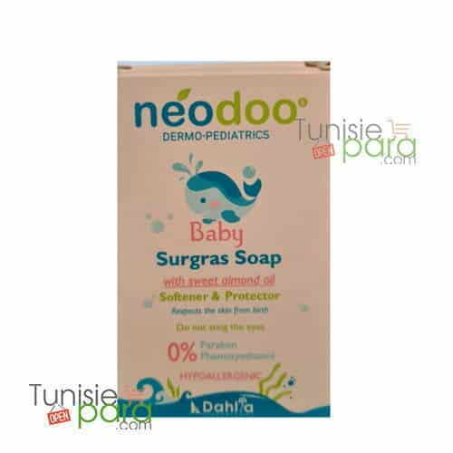

neodoo savon 85g

Description du produit
Le savon surgras Néodoo 85g (de la marque Dahlia) est un soin nettoyant spécialement conçu pour la peau délicate des bébés dès la naissance.
Caractéristiques
- Nettoie en douceur, purifie, apaise et hydrate en profondeur.
Informations du produit
Catégorie : Nettoyage et hygiène
Prix : 3.920 DT
Conseils d'utilisation
- Evitez le contact avec les yeux
- Mouillez la peau avec de l'eau
- Conservez le savon dans un endroit sec après l'utilisation
Quantité
Retourner au catalogue